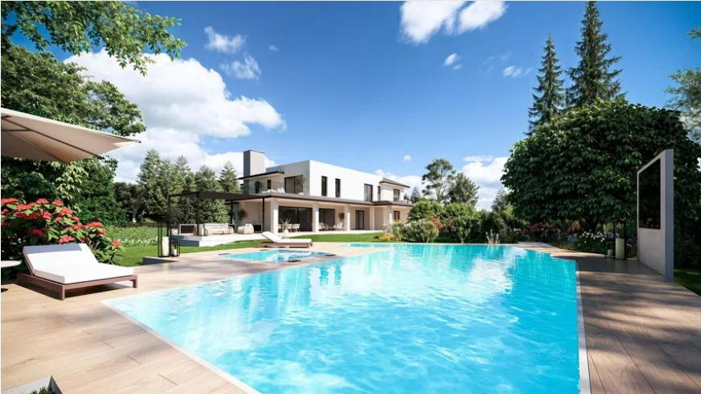

Zu verkaufen
10.900.000 €
Einfamilienhaus | Camino Alto
La Moraleja
- 987 m²
- 7 Schlafz.
Verkauf einer freistehenden Villa in La Moraleja, renoviert mit Top-Qualitäten. Großer Garten mit Pool für Veranstaltungen im Freien.